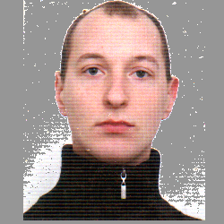

Максим
Дружинин
Системный администратор
Дата рождения
Город проживания
Телефон (viber, telegram)
e-mail
29 июня 1983 года .
Днепр
+38 095 782 86 41
drumakc@meta.ua
Опыт работы
Ноябрь 2017 по настоящее время - системный
администратор в главном офисе ООО “Гермес Гранд
Волмор”.
- администрирование программной автоматической телефонной станции “Asterisk” (панель мониторинга “MonAst”).
- администрирование GSM-шлюзов GoIP 8, GoIP 16, GoIP 32 (панель управления “EasyPhone”).
- Установка и настройка роутеров (Mikrotik, DrayTek, TP-Link), сетевых принтеров, IP-телефонов (Grandstream GXP1610), кассовых аппаратов MINI-T400, сканеров штрих-кодов, торговые весы с печатью этикеток, GPS-трекеров, видеорегистраторов, IP-камер.
- Мелкий ремонт принтеров и сканеров, ПК и ноутбуков, IP-телефонов, детекторов купюр.
- Обслуживание офисного оборудования, настройка программного обеспечения.
- Техническая консультация сотрудников и устранение сбоев в работе оргтехники и сетевого оборудования.
- Поиск, подбор, закупка оборудования(IP- телефон, IP-камеры, сетевые принтеры, сканеры, смартфоны, роутеры и сетевые коммутаторы).
- Выбор поставщиков оборудования, провайдеров интернета.
- Монтаж и демонтаж силовой и слаботочной проводки.
- Монтаж, демонтаж, настройка охранной сигнализации и кодового замка.
-
Создание, размещение сайтов на хостинге,
наполнение контентом:
сайт http://germes-tabak.com.ua/ создал с использованием HTML, CSS, javascript, PHP.
сайт http://euro-opt.net/ создал с использованием Wordpress.
сайт https://voda-brilliant.com.ua/ наполнял контентом в “Битрикс24”.
Декабрь 2005 г. по 18 октября 2017 г. - инженер
сервисного обслуживания лифтов и эскалаторов ООО
“ТиссенКрупп Элевейтор Украина”.
- Монтаж и наладка лифтов и эскалаторов производства ThyssenKrupp, Otis, Shindler, BLT, Sjec.
- Организация и проведение ввода в эксплуатацию оборудования
- Организация и проведение плановых/внеплановых осмотров оборудования.
- Диагностика и устранение неисправностей.
- Модернизация оборудования.
Образование
2000 г. - 2005 г. Днепропетровский национальный университет
железнодорожного транспорта, факультет “Управление
процессами перевозки”, специальность “Автоматика, телемеханика
и связь”.
Знание языков
украинский и русский - родные,
английский - средний
Дополнительные сведения
- Опыт работы в операционных системах на базе ядра Linux.
- Опыт создания проектов на основе Arduino Nano.
- Опыт создания проектов на основе Raspberry Pi 4 на Ubuntu и других ОС на ядре Linux (домашний веб-сервер, файловое хранилище).
- Умение работать паяльником.
- Базовые знания HTML, CSS, javascript, PHP.
- Наличие водительских прав категории “В”.
- Наличие биометрического паспорта.
- Опыт работы в 1С Предприятие.